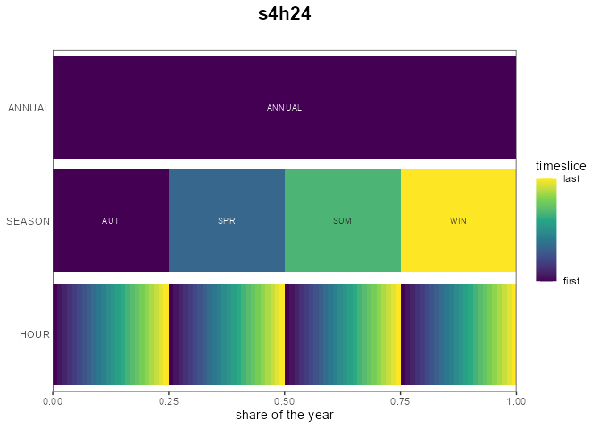

Time resolution: calendars and slices
Source:vignettes/articles/time-resolution.Rmd
time-resolution.RmdWhy sub-annual time matters
Annual averages hide what makes energy systems hard: the sun sets, wind stalls, demand peaks in the evening. A model that balances electricity once a year sees none of it — storage is pointless, solar looks dispatchable, peak capacity is free. A calendar gives the model sub-annual time slices, and the slice count is the main dial between realism and model size:
| calendar | structure | slices |
|---|---|---|
utopia_annual |
one annual slice | 1 |
utopia_seasons |
4 seasons × day/night/peak | 12 |
utopia_s4h24 |
4 seasons × 24 hours | 96 |
utopia_m12h24 |
12 months × 24 hours | 288 |
d365 |
365 days | 365 |
Model variables scale roughly linearly with slices — the 96-slice UTOPIA base case solves in seconds on GLPK, the 288-slice variant is noticeably heavier.
The make_timetable() grammar
A calendar’s structure is a nested named list: each
element is a level (e.g. SEASON,
HOUR), holding its slices. Slice names must be
alphanumeric (they become set elements in the solver files). The
simplest form lists slice names — the year is divided equally:
tt <- make_timetable(list(
SEASON = c("WIN", "SPR", "SUM", "AUT"),
HOUR = paste0("h", formatC(0:23, width = 2, flag = "0"))
))
head(tt) # 4 x 24 = 96 leaf slices, equal shares
#> ANNUAL SEASON HOUR slice share weight
#> <char> <char> <char> <char> <num> <num>
#> 1: ANNUAL AUT h00 AUT_h00 0.01041667 1
#> 2: ANNUAL AUT h01 AUT_h01 0.01041667 1
#> 3: ANNUAL AUT h02 AUT_h02 0.01041667 1
#> 4: ANNUAL AUT h03 AUT_h03 0.01041667 1
#> 5: ANNUAL AUT h04 AUT_h04 0.01041667 1
#> 6: ANNUAL AUT h05 AUT_h05 0.01041667 1Unequal shares are given per slice; a nested
list(<share>, <LEVEL> = ...) attaches child
levels. UTOPIA’s 12-slice calendar makes peak hours short and winter
nights long:
tt12 <- make_timetable(list(
SEASON = list(
WIN = list(1 / 4, HOUR = list(DAY = 9 / 24, NGT = 12 / 24, PK = 3 / 24)),
SPR = list(1 / 4, HOUR = list(DAY = 11 / 24, NGT = 11 / 24, PK = 2 / 24)),
SUM = list(1 / 4, HOUR = list(DAY = 12 / 24, NGT = 9 / 24, PK = 3 / 24)),
AUT = list(1 / 4, HOUR = list(DAY = 11 / 24, NGT = 11 / 24, PK = 2 / 24))
)
))
head(tt12)
#> ANNUAL SEASON HOUR slice share weight
#> <char> <char> <char> <char> <num> <num>
#> 1: ANNUAL AUT DAY AUT_DAY 0.11458333 1
#> 2: ANNUAL AUT NGT AUT_NGT 0.11458333 1
#> 3: ANNUAL AUT PK AUT_PK 0.02083333 1
#> 4: ANNUAL SPR DAY SPR_DAY 0.11458333 1
#> 5: ANNUAL SPR NGT SPR_NGT 0.11458333 1
#> 6: ANNUAL SPR PK SPR_PK 0.02083333 1From timetable to calendar
newCalendar() turns a timetable into a
calendar object. Note that name is the
first argument — always pass the timetable by name
(timetable =), or name name/desc
so the timetable lands in the right slot:
cal <- newCalendar(timetable = tt, name = "s4h24")
cal@name
#> [1] "s4h24"
nrow(cal@slice_share) # slices with their share of the year
#> [1] 101
head(as.data.frame(cal@slice_share), 3)
#> slice share weight
#> 1 ANNUAL 1.00 1
#> 2 AUT 0.25 1
#> 3 SPR 0.25 1
cal@timeframe_rank # levels, coarsest (ANNUAL) to finest
#> ANNUAL SEASON HOUR
#> 1 2 3The derived slots do the bookkeeping the model needs:
-
@slice_share— each slice’s share of the year (the weight used whenever slice values are aggregated); -
@timeframes— the slice sets at every level (ANNUAL,SEASON, …); -
@timeframe_rank— the level hierarchy; a commodity’stimeframepicks the level it is balanced on.
autoplot() draws the nested structure:
autoplot(cal)
Ready-made calendars
The package ships a calendars list, built by
data-raw/calendars.R with exactly the grammar above —
including the whole UTOPIA family:
names(calendars)
#> [1] "season_dn" "d365"
#> [3] "utopia_annual" "utopia_seasons"
#> [5] "utopia_s4h24" "utopia_m12h24"
#> [7] "d365_h24" "d365_h24_subset_1day_per_month"
calendars$utopia_seasons@desc
#> [1] "UTOPIA: 4 seasons x 3 dayparts (DAY/NIGHT/PEAK), 12 slices"Pick one and pass it to newModel(calendar = ...); the
UTOPIA vignettes use calendars$utopia_s4h24 throughout.
Slice-string helpers
Slice names encode time; a few helpers translate between encodings:
hour2HOUR(c(0, 13, 23)) # hour of day -> "h00" "h13" "h23"
#> [1] "h00" "h13" "h23"
yday2YDAY(c(1, 365)) # day of year -> "d001" "d365"
#> [1] "d001" "d365"
head(tsl_formats) # known slice-name formats (a dataset)
#> [1] "d364" "d365" "d366" "d364_h24" "d365_h24" "d366_h24"tsl2dtm() / dtm2tsl() convert slice strings
to/from date-times — useful when joining model output with observed
hourly data.
Timeframes: commodities and processes
Every commodity carries a timeframe — the calendar level
it is balanced on. Fuels are typically
ANNUAL; electricity HOUR:
ELC <- newCommodity("ELC", timeframe = "HOUR") # balanced every slice
COA <- newCommodity("COA", timeframe = "ANNUAL") # balanced once a yearA process operates at the finest timeframe among its
commodities (a gas plant producing hourly ELC is dispatched
hourly), overridable via newTechnology(timeframe = ...) —
see the model bricks article for
details. The practical consequence: raising the calendar’s resolution
refines only the commodities and processes whose timeframes
follow it — annual bookkeeping stays cheap.
Choosing a resolution
- Start coarse (
utopia_seasons-like, ~12 slices) while the model structure is in flux — solves are instant. - Move to hour-within-season (
utopia_s4h24, 96) once storage, VRE profiles or peak pricing matter — intra-day dynamics need real hours. - Full-year hourly detail (
utopia_m12h24, 288 ord365+hours) is for final runs; check tractability withmodel_size()first.
The UTOPIA vignettes build one model and run it on these calendars interchangeably — resolution is a configuration choice, not a rewrite.